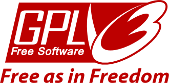

Doc Revision 20170907
License
SunRiZe is released under the terms of
GPL.v.3.0
license.
All the documentation pages are released under the terms of the
Creative
Commons 4.0 - BY-SA license
What is SunRiZe
SunRiZe is an open and simplified Model-Driven
Development software, specifically oriented to the design of
microcontrollers firmware/software.
A Model-Driven Development software (or MDD) is a programmers tool
that is able to generate a relevant part of source code, starting
from one or more drawings representing the “model”.
Usually a MDD is used to create object oriented source code, in C++
or Java programming languages, starting by UML diagrams.
SunRiZe , uses a different strategy, based on three levels
:
- The graphics editor
- The model
- The code generator
That are logically separated, and where only the graphics editor is
a fixed part, while the model is easily modifiable and extensible
and the code generator is javascript.
In these pages we will describe the standard SunRiZe with
the default model that has been designed to create microcontrollers
software in C language.
SunRiZe Design
SunRiZe has been developed following a strong object oriented
philosophy in which there is a drawing space, that is able to
contains Standalone objects and Connections, each of ones with a
proper editing dialog and a generic content, that is a dynamic
polymorphic variable.
The entire content of the drawn can be converted to a JSON text file
that can be saved or passed to an integrated javascript engine,
enhanced with specific functions, expressly designed to produce
code.
From this point of view both the model and the language are
completely open to modifications and free implementation, of new
objects and scripts.
You will find further documentation into the code that is completely
commented with Doxygen compliant comments.
In this document we will analyze the current model that is
simplified, with a generator designed to produce C-99
compatible code for micro controllers, even without operating system
like the Arduino system for example.
Is not so difficult to change the code generator script, to generate
code in other languages, as for example the PIC assembler,
by changing the javascript.
Changing the model instead is a bit more difficult, and requires to
study and change the SunRiZe code that is written in C++-1x.
Why GPL v.3.0
I chose the GPL license, because SunRiZe is designed
to be changed and adapted to other models, and YOU must be
free to make this project grows.
Anyway, GPL v.3.0 does not concern the code produced with SunRiZe,
as well as the gcc compiler does not concern the code
compiled with the compiler.
GPL v.3.0 requires only that if you make any kind of changes
to this software you have to release it under the same license that
is open and free, that is an acceptable limitation for the purposes
of this project.
SunRiZe, freely includes the sources code from the duktape javascript
engine that is released under the terms of the MIT license.